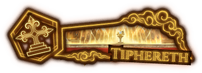

O Patrono do Andar: Tiphereth
atraves da combinação de cartas de anormalidade especificas e muito arriscadas é possivel realizar uma estrategia comumnmente chamada de "Tiphexodia" o video abaixo demonstra como utilizá-la.

Andar em Buffs acumulativos, cura e efeitos que são uma faca de dois gumes.
atraves da combinação de cartas de anormalidade especificas e muito arriscadas é possivel realizar uma estrategia comumnmente chamada de "Tiphexodia" o video abaixo demonstra como utilizá-la.